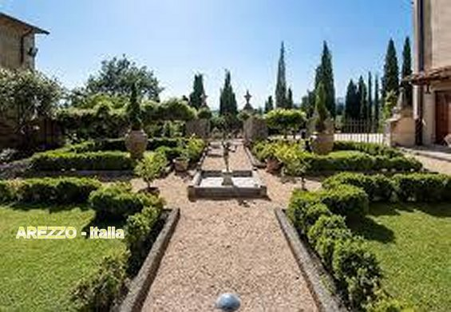
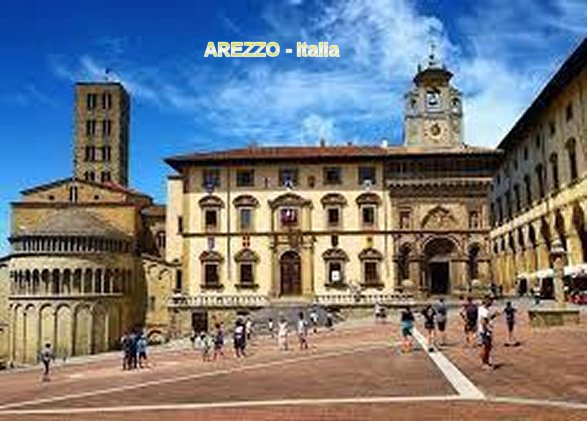
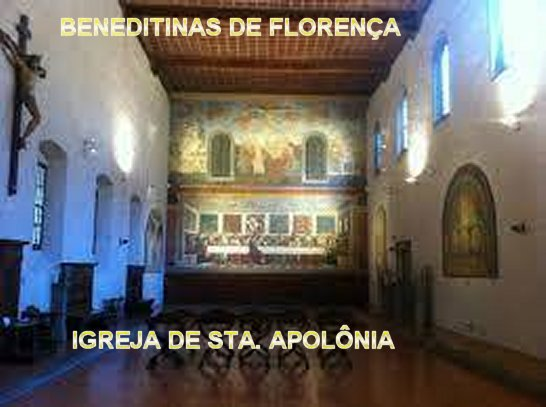
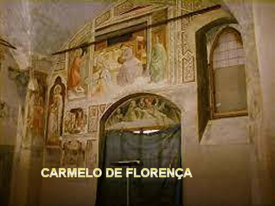

"SEGUINDO SUA VOCAÇÃO"

A FAMÍLIA
Ana Maria Redi nasceu no dia 15
de Julho de 1747, na simpática cidade italiana de Arezzo, na região da Toscana,
e foi Batizada no dia seguinte, festa de NOSSA SENHORA DO CARMO, sendo ela, a
segunda de uma família de treze filhos, pertencente à antiga nobreza, pessoas
muito religiosas que consideravam a fidalguia e a fé católica serem tratadas e
consideradas com o mesmo respeito e amor. Com exceção do seu irmão primogênito e
de mais cinco irmãos e irmãs que faleceram na infância, todos os outros se
consagraram a DEUS.
Também em Arezzo, onde a família
residia, já havia uma antiga tradição literária construída por vários poetas e
escritores de nome, que viveram na região. Da mesma maneira, existia uma intensa
devoção mariana com um especial carinho por São Francisco de Assis, pois Arezzo
recebia grande influência dos vizinhos, Assis, Gúbio e Espoleto, que
constituíam na verdade, o centro dos franciscanos na Itália.
ANA MARIA REVELOU-SE RELIGIOSA

Seu pai Inácio Redi tinha uma
irmã Ana Redi Sisti, que também se casou e constituiu família, e ambos, com o
mesmo carinho e seriedade, souberam apreciar e cultivar as preciosas qualidades
que a pequena Ana Maria começou a revelar desde tenra idade. E por isso mesmo,
contribuíram de maneira efetiva para uma educação sólida e eficiente as crianças
da família. O pai Dom Inácio instruiu todos os filhos nas coisas de DEUS e nos
assuntos da vida, inclusive, ensinava-os a rezar, a conhecer JESUS, NOSSA
SENHORA, o PAI ETERNO e os SANTOS. Homem tradicionalmente religioso era muito
ligado aos Padres Jesuítas, inclusive tinha um irmão, o Padre Diego, que além de
tio de Ana Maria, era muito querido por ela. Mas, todavia, é importante
salientar, que aquela atmosfera de verdadeira piedade na Casa dos Redi nada
tinha de rígido ou convencional: havia a natural vivacidade das crianças e dos
jovens, o calor de um grande afeto, como também as reuniões familiares e uma
moderada vida social. Homem de oração, Dom Inácio compreendia as exigências de
sua posição e classe social e não impedia as boas relações. Ele quer que a
piedade de seus filhos nasça da vida, espontaneamente. Bom pai, ele gostava de
também participar dos divertimentos sadios em companhia dos filhos. E para
habituá-los à amizade com DEUS, no tempo certo, interrompia as brincadeiras para
dizer: “Vamos andar um
pouco e rezar as Ladainhas e a Salve Rainha em homenagem a NOSSA SENHORA”.
E todos rezavam respeitosamente.
O pai, nessa época com 27 anos
de idade sentia pela filha Ana Maria, uma ternura particular, tornando-se
consciente das revelações e tendências da alma dela, que instintivamente se
orientava para DEUS. Com poucos anos de idade já perguntava ao seu pai, por
NOSSO SENHOR; o seu pai Dom Inácio com o coração generoso e muita alegria
interior, lhe contava as lindas histórias do Nascimento de JESUS, da SUA
admirável coragem, da Paixão de NOSSO SENHOR, e SUA terrível Morte na Cruz, para
Redimir a humanidade de todas as gerações, propiciando a todos nós a salvação
eterna. Carinhosamente ele a instrui com sabedoria, e também lhe ensinou a rezar
muitas orações. Desde pequena, Ana Maria cultivava imensa devoção a JESUS e a
SANTÍSSIMA VIRGEM MARIA; ela se fechava em seu quarto, ajoelhava e ficava
rezando, enquanto seus irmãos lá fora estavam brincando e se divertindo.
SACRAMENTO DA CONFISSÃO
Ana Maria sempre correspondia
aos esforços de seu pai com interesse e prazer, aprendendo a ler e a escrever
desde tenra idade. Já aos sete anos fez a sua primeira Confissão. Na
continuidade, conforme o costume da época ela fez muitas outras, porque queria
manter o seu coração “bem
limpinho” para JESUS, quando ELE viesse
através da Sagrada Comunhão. Frequentemente o pai acompanhava a filha na Igreja,
passando por longas trilhas solitárias, que ligava a residência “Vila Redi” (que era a casa de campo) à Igreja dos Capuchinhos.
EM SANTA APOLÔNIA
Aos 9 anos de idade,
também por exigência do próprio processo de educação da época foi conduzida pelos
seus pais ao Internato das Freiras Beneditinas em
Santa Apolônia, em Florença, também
na Itália. Os Mosteiros tinham os seus próprios esquemas educacionais. A pequena
Ana Maria foi confiada a Dona Maria Leonor degli Albizzi e permaneceu em sua
guarda por mais de sete anos, fato que lhe propiciou um crescimento progressivo
em sua vida interior. Em 9 de Fevereiro de 1757, recebeu do Senhor Arcebispo de
Florença, Monsenhor Incontri, o Sacramento da Crisma e aos 10 anos de idade, de
acordo com a norma vigente, recebeu a Primeira Comunhão Eucarística.
A HERESIA JANSENISTA
Todavia, por aqueles anos o
ambiente em Santa Apolônia sofreu uma desagradável influência jansenista, que na
época propagava doutrinas heréticas que se espalharam desde a França e também da
Bélgica, para toda a Europa, com uma terrível e danosa tendência calvinista,
sendo contra a devoção a
“NOSSA SENHORA”, ao “SAGRADO CORAÇÃO DE JESUS” e contra a frequente “COMUNHÃO EUCARÍSTICA”. E aconteceu
que alguns Sacerdotes que atendiam ao Mosteiro abraçaram estas heresias... Ana Maria
embora ainda fosse uma criança, não seguia as recomendações deles, e nem seguia aquelas
tristes e desagradáveis idéias. Por carta, mantinha uma constante correspondência com
seus pais, conservando o seu espírito fiel as doutrinas corretas, assim como o seu
pleno e apaixonado amor por “JESUS”
e “NOSSA MÃE SANTÍSSIMA”. Finalmente, o Padre
Pellegrini assumiu a Assistência Espiritual do Mosteiro, e colocou tudo nos seus devidos
lugares; foi o início de uma autêntica vida de oração. O Amor ao “SAGRADO CORAÇÃO DE JESUS” e sua paixão pelo “SANTÍSSIMO SACRAMENTO” centralizaram
a piedade de Ana Maria, fazendo com que se acentuasse o seu recolhimento e a necessidade
de se doar em sacrifícios, sempre em benefício das conversões, assim como as orações em
silêncio em benefício do clero. Tudo se passava no maior segredo entre a sua alma e
“DEUS”.
É CHAMADA PARA O CARMELO
Em Setembro de 1763 Ana Maria
recebeu uma visita de despedida da sua amiga Cecília Albergotti, que estava para
entrar no Mosteiro Carmelita de Santa Teresa, em Florença, onde se tornou a Irmã
Teresa Crucifixa de JESUS. Ana Maria sentiu-se misteriosamente inclinada e com
grande simpatia por aquela idéia. Ela gostava do Mosteiro Beneditino onde se
encontrava, mas por um misterioso sentimento o seu coração balançou bem forte
com as palavras da sua visitante. Inclusive, timidamente chegou a lhe perguntar
sobre alguns pormenores da observância Teresiana. E por fim, no exato momento em
que a sua amiga se despediu, ela ouviu uma voz interior que lhe disse:
“Sou Teresa de Jesus e quero-te entre
as minhas filhas”. Profundamente comovida,
correu para o Coro e, aos pés de
“JESUS SACRAMENTADO” (seu refúgio habitual),
ouviu uma segunda vez: “Eu sou
Teresa de Jesus e lhe digo que em breve estarás em Meu Mosteiro”. A partir daquele momento Ana Maria se persuadiu, ficou
perfeitamente consciente e com convicção da sua Vocação Carmelita.
ESCOLHA DA VOCAÇÃO CERTA
Em 1764 ela regressou ao lar a
pedido de seu pai, com objetivo dela ser examinada com maior cuidado, a fim de
que revelasse plena consciência da sua vocação. Estando ciente dos desejos da
sua filha em se dedicar a vida religiosa (embora ele não soubesse dos recentes
acontecimentos com ela), Dom Redi sentiu que era o seu dever zelar com mais
cuidado pelo futuro dela, e por isso, impôs um prazo: “Ana Maria devia rezar e pensar seriamente no assunto
e só voltar a falar nele, com sua decisão, quando completasse a idade de 17
anos”. Ao prazo imposto pelo pai, faltavam
três meses para o aniversário dela, quando completaria o prazo dado. Ela verdadeiramente
aproveitou aquele tempo se consagrando a fervorosas orações, a muita reflexão e alguns entretenimentos
na sociedade: seu pai homem prudente e muito experiente na vida quis testar os sentimentos
da filha, para que a sua decisão fosse plenamente consciente, sem nenhuma sombra de dúvida.
E admiravelmente o comportamento da filha provou que ela embora com pouca idade, já era
uma mulher consciente que a tudo governava, se dirigindo unicamente para DEUS.
CARMELO EM FLORENÇA

Ana Maria completou 17 anos no
dia 15 de Julho de 1764, e depois de aprovada pelo pai, com autorização da mãe,
foi avaliada por Sacerdotes e autoridades religiosas amigas da família, tendo
plena e total aprovação. Assim, consciente e decidida foi pedir admissão ao
Mosteiro de Santa Teresa em Florença. Foi admitida e entrou no Carmelo em 1º de
Setembro de 1764. O Carmelo de Florença tinha fama enérgica já bem conhecida,
assim como Mosteiro de espírito dedicado a um absoluto retiro com perfeito
recolhimento, que eram as características do Carmelo Reformado. Uma vez no
Carmelo, Ana Maria sentiu que ali era o seu lugar e onde encontrou os meios mais
adequados para realizar a sua vocação contemplativa.
A sua formação, dentro da
Comunidade Religiosa, foi confiada em particular à Madre Ana Maria de Santo
Antonio de Pádua, alma digna e santa, que desde o começo compreendeu o interior
de Ana Maria, e lhe ensinou os costumes da vida monástica, educando-a com
ternura e firmeza. Havia também outra Mestra que por coincidência tinha o nome
igual ao dela Madre Ana Maria, era idosa e muito austera, que ajudou
preciosamente na edificação da solidez das virtudes da Postulante Ana Maria Redi.
A 5 de Janeiro de 1765 o Capítulo
da Comunidade Religiosa a admitiu à “vestição”. No dia 10 de Março
regressou a clausura para começar o Noviciado, e no dia seguinte tomou o
“Hábito” recebendo o nome de
“Irmã Teresa Margarida do Coração de Jesus”.
Na continuidade das atividades
no Carmelo, Frei Colombino que foi o seu primeiro confessor lhe ajudou com
sabedoria assim como a dirigiu nas dificuldades, nas provas de purificação
passiva, que a preparou para sua união com DEUS.
EXCELENTE DIRETOR ESPIRITUAL
Alguns meses depois, em Novembro
de 1765, Frei Ildefonso de São Luiz Gonzaga, tornou-se o seu Diretor Espiritual.
Esse encontro foi muito feliz e proveitoso para ela, porque Frei Ildefonso era
um excelente teólogo muito contemplativo, sacerdote douto e santo, que com
perfeita sabedoria e discernimento guiou a Irmã Teresa Margarida até a sua
morte, tendo inclusive o mérito de educar pessoalmente a Irmã Teresa Margarida
no espírito de São João da Cruz.
Em fins de Março de 1766 a Irmã
Teresa Margarida se preparava com especiais Exercícios Espirituais, para fazer a
sua profissão de fé, com a
“tomada do véu”. Nesse fervor de conquista
da perfeição, ela pronunciou os "Votos Solenes" a Madre Teresa
Vitória da Sagrada Conversação. Escreveu e convidou o seu pai para vir, mas
infelizmente ele não pode comparecer.
A FORÇA DO AMOR DIVINO
Tendo atingido a plena
maturidade ascética, a Irmã Teresa Margarida passou a se empenhar na busca do
amor, com todos os seus esforços, atraindo para SI uma graça especial de Ordem
Contemplativa. Num domingo de Janeiro de 1767, enquanto no Coro as Irmãs rezavam
a “Tercia”, ela ao ler no Capítulo as palavras “DEUS charitas est et qui anet in caritate in DEO anet et DEUS
in e o”, (DEUS é Amor, e quem permanece
no Amor permanece em DEUS e DEUS nele, ou nela),
a Irmã Teresa Margarida sentiu-se investida por uma onda do Amor Divino que a fez
experimentar a realidade que estava expressa nas palavras da Escritura, submergindo-a
no abismo insondável da caridade infinita de DEUS.
De fato, foi uma Graça Especial
dada por DEUS que é Amor, e que a introduziu decididamente num período místico da
sua vida, fazendo com que ela permanecesse submergida no Amor Divino ao longo de
toda a sua existência. Essa Graça aplicada numa alma para fazê-la escondida, é
tão bonita e tão forte que deixa de certa forma transparecer os seus efeitos na
alma da escolhida. Verdadeiramente por muitos dias Irmã Teresa Margarida
percorreu o Mosteiro totalmente alienada da existência, repetindo em voz baixa,
mas audível: “DEUS charitas
est” (DEUS é Amor).
A persistência desse estado preocupou as
Irmãs, que a conduziram a um sério exame Provincial, o qual atestou na verdade,
tratar-se de um profundo recolhimento, que a mantinha absorta em
DEUS.
EXERCÍCIOS ESPIRITUAIS
Os propósitos dos Exercícios
Espirituais de 1768, por ocasião do aniversario da sua profissão de fé, gerou
documentos eloquentes a respeito do estado de sua alma. O ato de oferecimento ao
"CORAÇÃO DE JESUS",
cerne dos seus propósitos, é um especial movimento de
abandono ao Amor Abrasador que ela se deixa invadir, para ser a vítima imolada em suas
chamas. Sua alma está inteiramente sob a ação Divina, inteiramente abandonada ao
SENHOR, AQUELE que é “TUDO”.
DEUS a invade e SE apossa dela, move-a e
a dirige. Esses exercícios foram enriquecidos com graças excepcionais, de luz e
de amor. Fato que Frei João da Cruz não hesitou em reconhecer, ele que era o Confessor
ordinário do Mosteiro e que acompanhou a Irmã nesse retiro.
PELA FÉ ESCONDIDA COM CRISTO
EM DEUS
 Teresa Margarida estava voando em direção ao estado de perfeita união com DEUS.
Seria impossível determinar a época em que ela alcançou o seu objetivo, mas se não
ocorreu antes, com certeza aconteceu durante o seu último ano de vida quando atingiu
permanentemente esse estado. Isto porque, sua alma estava mergulhada na contemplação
e na imitação amorosa do "CORAÇÃO
DE JESUS". Significa dizer, a imitação da alma
de CRISTO unida hipostaticamente ao VERBO, que a conduziu a igualar pela fé as operações
de conhecimento amoroso que une o VERBO ENCARNADO ao PAI ETERNO sob o impulso do
ESPÍRITO SANTO. O objetivo espiritual da Irmã Teresa Margarida estava completo:
o "CORAÇÃO DE JESUS a conduziu
espiritualmente ao ápice da união, e podendo participar da Vida Trinitária pela fé".
Eis agora na plenitude do significado
“abscondita cum Christo in Deo”.
(escondida com CRISTO em DEUS).
Ela tudo enfrenta, tudo abraça, tudo
aceita e sofre, mostrando a DEUS a sinceridade de seus ardentes desejos. As
ocupações excessivas e as torturantes repugnâncias interiores não afrouxaram o
seu próprio domínio. Ela se tornou uma vítima da caridade, totalmente entregue
as chamas do amor abrasador, na plenitude da vontade de amar. Ela já estava
madura para o eterno amor.
Teresa Margarida estava voando em direção ao estado de perfeita união com DEUS.
Seria impossível determinar a época em que ela alcançou o seu objetivo, mas se não
ocorreu antes, com certeza aconteceu durante o seu último ano de vida quando atingiu
permanentemente esse estado. Isto porque, sua alma estava mergulhada na contemplação
e na imitação amorosa do "CORAÇÃO
DE JESUS". Significa dizer, a imitação da alma
de CRISTO unida hipostaticamente ao VERBO, que a conduziu a igualar pela fé as operações
de conhecimento amoroso que une o VERBO ENCARNADO ao PAI ETERNO sob o impulso do
ESPÍRITO SANTO. O objetivo espiritual da Irmã Teresa Margarida estava completo:
o "CORAÇÃO DE JESUS a conduziu
espiritualmente ao ápice da união, e podendo participar da Vida Trinitária pela fé".
Eis agora na plenitude do significado
“abscondita cum Christo in Deo”.
(escondida com CRISTO em DEUS).
Ela tudo enfrenta, tudo abraça, tudo
aceita e sofre, mostrando a DEUS a sinceridade de seus ardentes desejos. As
ocupações excessivas e as torturantes repugnâncias interiores não afrouxaram o
seu próprio domínio. Ela se tornou uma vítima da caridade, totalmente entregue
as chamas do amor abrasador, na plenitude da vontade de amar. Ela já estava
madura para o eterno amor.


 - PRÓXIMA
PÁGINA
- PRÓXIMA
PÁGINA
- RETORNA
AO ÍNDICE